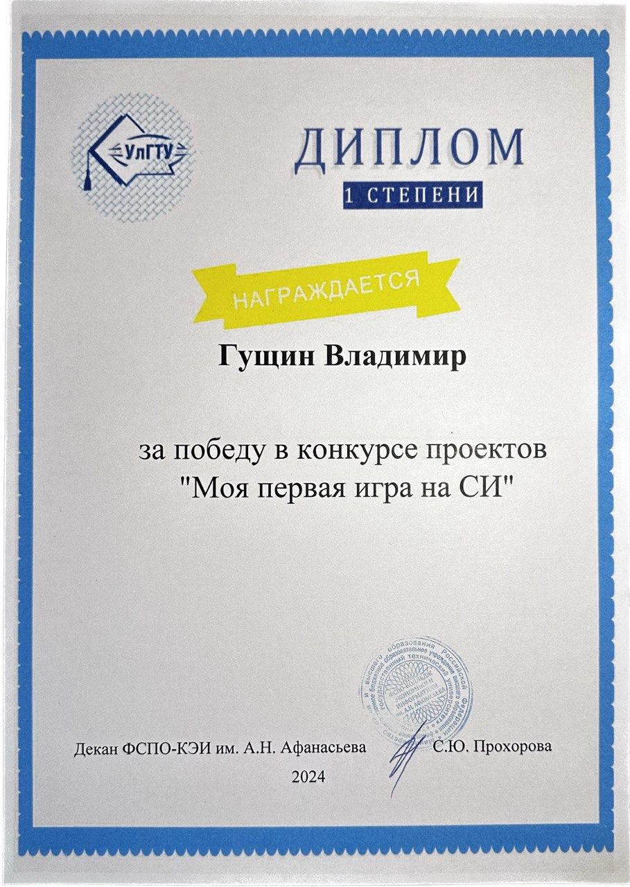

Достижения
-
Дополнительно прошёл обучение «Программирование на языке Java. Продвинутый уровень» в IT-Cube

-
Победитель в конкурсе проектов 2024 «Моя первая игра на СИ»
 -
Победитель в хакатоне 2025 года «IT-куб'ок» по направлению «Программирование на языке Java»

-
Участник регионального этапа конкурса 2025 «Профессионалы» как один из лучших студентов колледжа